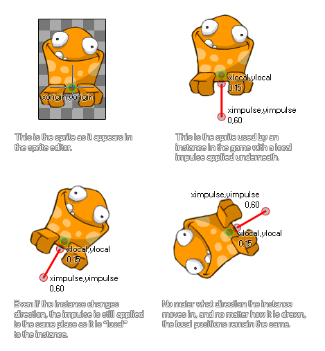

physics_apply_local_impulse
This function applies an impulse to a position in the room with a strength defined by a vector.
Syntax :
physics_apply_local_impulse(xpos, ypos, ximpulse, yimpulse)
| Argument | Description |
|---|---|
| xpos | The x coordinate relative to the origin where the impulse will be applied |
| ypos | The y coordinate relative to the origin where the impulse will be applied |
| ximpulse | the x component of the impulse vector (relative to the xpos coordinate) |
| yimpulse | the y component of the impulse vector (relative to the ypos coordinate) |
Returns : N/A
Description
Not only can you apply force and gravity to an object with the physics in GameMaker:Studio but you can also apply an impulse. This is slightly different to a force in that when it is applied it will
immediately affect the speed, and, potentially the torque (or "spin") of the object, particularly if the point chosen to apply the impulse has a vector that is not aligned with the centre of mass (note :
the center of mass is not necessarily the same as the origin!). This function applies an impulse locally to an instance. What this means is that the strength and direction of the impulse are
calculated based on the origin (or the position if it has no sprite) of the instance, without taking into consideration the direction or rotation it may have in the game room or physics world. Here is an illustration :

As you can see, the frog in the image gets an impulse from below to make it "jump". The exact impulse is defined by the vector we get from the components ximpulse/yimpulse in relation to the xpos/ypos
coordinates - which simply means that the impulse is calculated as the distance from xpos/ypos to ximpulse/yimpulse in Newtons, and the direction is the angle that we get from xpos/ypos to ximpulse/yimpulse.
NOTE : The physics world uses metres for all its calculations, and the ratio of pixels per metre is defined in the room editor or using
physics_world_create.
Example :
if jump physics_apply_local_impulse(0, 20, 0, 50);
The code above will apply an impulse with force of 30 Newtons and a direction going from bottom to top relative to the instance origin if the variable "jump" is true.